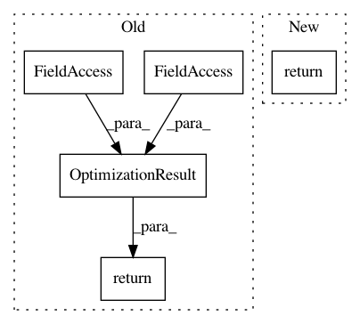

6e9a58b20848646f37fcf24179fc29f28cabda3d,qiskit/optimization/algorithms/recursive_minimum_eigen_optimizer.py,RecursiveMinimumEigenOptimizer,solve,#RecursiveMinimumEigenOptimizer#Any#,182
Before Change
// construct result
x_v = [var_values[x_aux.name] for x_aux in problem_ref.variables]
fval = result.fval
result = OptimizationResult(x=x_v, fval=fval, variables=problem_ref.variables,
status=OptimizationResultStatus.SUCCESS)
result = self._interpret(result, self._converters)
return RecursiveMinimumEigenOptimizationResult(x=result.x, fval=result.fval,
variables=result.variables,
replacements=replacements,
history=history,
status=(self._get_feasibility_status
(problem, result.x)))
def _find_strongest_correlation(self, correlations):
// get absolute values and set diagonal to -1 to make sure maximum is always on off-diagonal
After Change
// construct result
x_v = np.array([var_values[x_aux.name] for x_aux in problem_ref.variables])
return cast(RecursiveMinimumEigenOptimizationResult,
self._interpret(x=x_v, converters=self._converters, problem=problem,
result_class=RecursiveMinimumEigenOptimizationResult,
replacements=replacements, history=history))
@staticmethod
def _find_strongest_correlation(correlations):
In pattern: SUPERPATTERN
Frequency: 4
Non-data size: 5
Instances
Project Name: Qiskit/qiskit-aqua
Commit Name: 6e9a58b20848646f37fcf24179fc29f28cabda3d
Time: 2020-11-25
Author: 31178928+t-imamichi@users.noreply.github.com
File Name: qiskit/optimization/algorithms/recursive_minimum_eigen_optimizer.py
Class Name: RecursiveMinimumEigenOptimizer
Method Name: solve
Project Name: Qiskit/qiskit-aqua
Commit Name: 6e9a58b20848646f37fcf24179fc29f28cabda3d
Time: 2020-11-25
Author: 31178928+t-imamichi@users.noreply.github.com
File Name: qiskit/optimization/converters/integer_to_binary.py
Class Name: IntegerToBinary
Method Name: interpret
Project Name: Qiskit/qiskit-aqua
Commit Name: 6e9a58b20848646f37fcf24179fc29f28cabda3d
Time: 2020-11-25
Author: 31178928+t-imamichi@users.noreply.github.com
File Name: qiskit/optimization/algorithms/admm_optimizer.py
Class Name: ADMMOptimizer
Method Name: solve
Project Name: Qiskit/qiskit-aqua
Commit Name: 6e9a58b20848646f37fcf24179fc29f28cabda3d
Time: 2020-11-25
Author: 31178928+t-imamichi@users.noreply.github.com
File Name: qiskit/optimization/converters/inequality_to_equality.py
Class Name: InequalityToEquality
Method Name: interpret